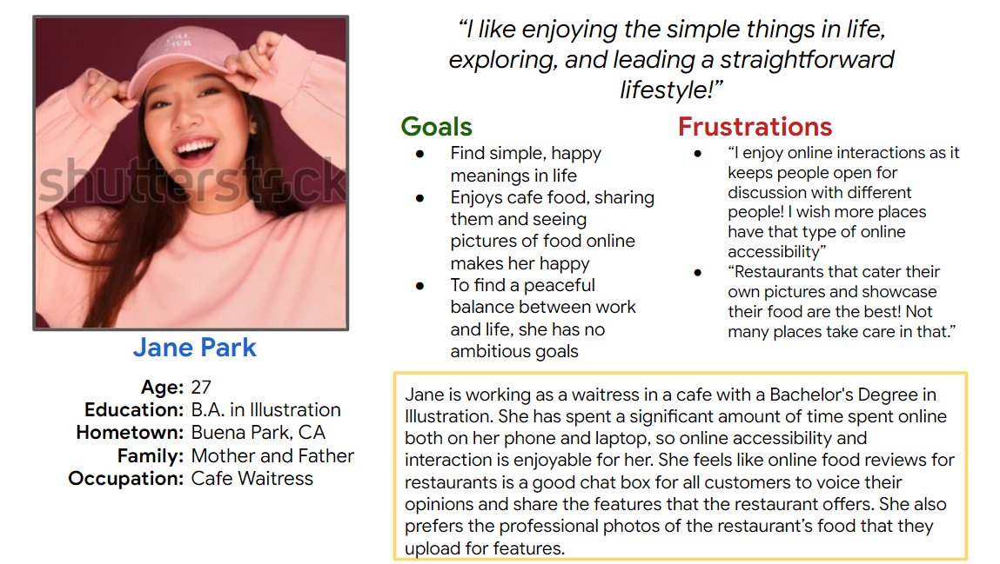
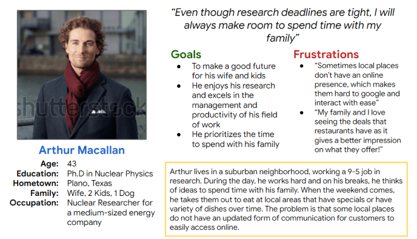
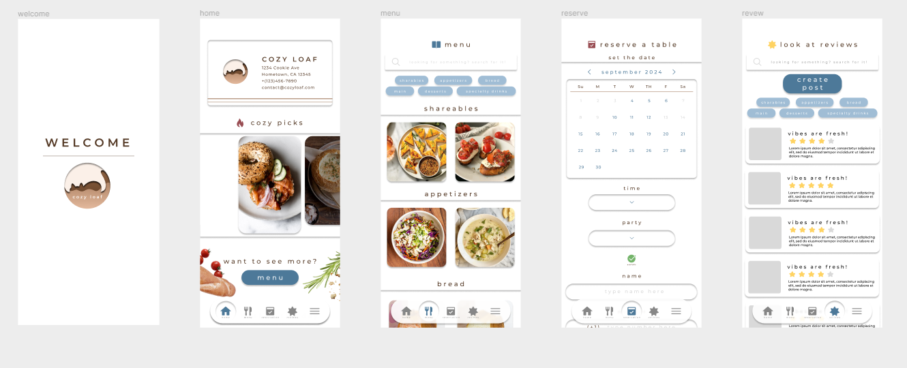
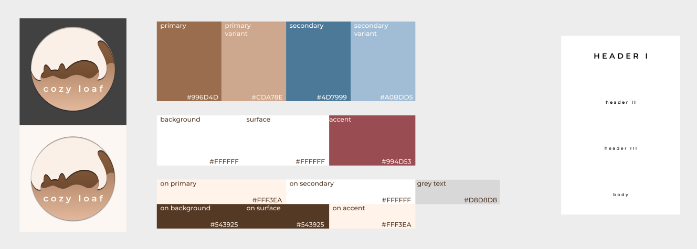

Project Overview
Cozy Loaf is a Figurative Hometown Restaurant serving as the main client for the development and idealization of a food review mobile app.
This project was planned to be working alongside the 7 month Google Coursera UX Design Certificate Course. Among the 5 months needed to follow the course timeline of this project, I’ve spent a fair amount of spare time to accelerate my progress, condensing my attention for this to about 3.5 months
This project was planned to be working alongside the 7 month Google Coursera UX Design Certificate Course. Among the 5 months needed to follow the course timeline of this project, I’ve spent a fair amount of spare time to accelerate my progress, condensing my attention for this to about 3.5 months
Role
Solo Project
Product Designer, UI/UX Designer, UX Researcher
User Research, Interaction, Visual Design, Prototyping & Testing, Information Architecture,
Product Designer, UI/UX Designer, UX Researcher
User Research, Interaction, Visual Design, Prototyping & Testing, Information Architecture,
From the course, they gave me a sample size of user bios to choose from to select individuals whose pain points relate to my prompt the closest:
User Pain Points
Jane Park: As a cafe waitress who spends time online looking at food pics and chatting online, I want to see more forums
and quality pictures in restaurant apps. This is so that I can read and share in experiences with others through a quality restaurant app.
Arthur Macallan: As a research and a father of 4, I want to be able to see specials and items that restaurants offer so that I can have a more
enjoyable time planning diverse events/hangouts for my family.
and quality pictures in restaurant apps. This is so that I can read and share in experiences with others through a quality restaurant app.
Arthur Macallan: As a research and a father of 4, I want to be able to see specials and items that restaurants offer so that I can have a more
enjoyable time planning diverse events/hangouts for my family.
User Stories


User Personas
Having empathy for the user is top priority when in UX Design
So, developing a full understanding of their pain points and processing information about them is key to keep the scope of our app to their pain points.
So, developing a full understanding of their pain points and processing information about them is key to keep the scope of our app to their pain points.
Researching our Users
Competitive Audits help develop a better understanding of competitors’ strengths and weaknesses
From there, we can learn what they do well and what they do better and apply those learnings to our app
From there, we can learn what they do well and what they do better and apply those learnings to our app
The Audit below is comparing the food review experience of each competitor’s app as a local and tourist consumer
Competitive Audit


Goals and Solutions
Using my research to implement the Idealization of my design sprint, the problems I’ve set to solve are set as these goals:
Wireframing and Lo-Fi Prototypes
Below are the steps developing the first rendition of the wireframe of the Cozy Loaf app
Sketching out keyframes


Digital Wireframe & Lo-fi Prototype

UX Research
Instead of paneling through hypothetical subjects that the course initially supplemented me,
I wanted a better quality of experience doing UX research for the Cozy Loaf app.
I planned and conducted the usability study of the first prototype gathering real subjects that tie withinthe general scope of the intended users, those who are around the young adult-adult age.
My research method is doing a Moderated Study with the focus on open ended answers focusing on user experience and preferences.
I’ve also added a quick survey in the end to hone in on user’s emotions throughout the research process
Below is a slide show presenting the data and analysis of my User Research for the Cozy Loaf Lofi Prototype
I wanted a better quality of experience doing UX research for the Cozy Loaf app.
I planned and conducted the usability study of the first prototype gathering real subjects that tie withinthe general scope of the intended users, those who are around the young adult-adult age.
My research method is doing a Moderated Study with the focus on open ended answers focusing on user experience and preferences.
I’ve also added a quick survey in the end to hone in on user’s emotions throughout the research process
Below is a slide show presenting the data and analysis of my User Research for the Cozy Loaf Lofi Prototype
If you’d like to see the app in action, click the button to view the prototype!

Brief Overview of Keyframe Designs

Design System

Logo Iterations
Now the fun part! Since this was a figurative restaurant, there are a lot of themes to choose from.
The prompt had the keyword: Hometown, so I wanted to keep a cozy and “homey” feel to the branding.
(I was wondering if I could also include cats since they give me comfort, I love cats and have 3 right now!)
That keyword honed down my inspiration to develop the name early in the program, as a “play on words” with Cozy Loaf
Inspiration
cats like to curl themselves into a type of ball for comfort, where lots of people would refer to them as loaves
lots of hometown cuisine includes homemade breads, soups, and comfort food, so an inclusion of a bread loaf theme seemed like a good homage to it
when thinking of where you come from (your hometown), one may almost always think of home and comfort
a sense of coziness and warmth envelopes the heart when thinking about home
The prompt had the keyword: Hometown, so I wanted to keep a cozy and “homey” feel to the branding.
(I was wondering if I could also include cats since they give me comfort, I love cats and have 3 right now!)
That keyword honed down my inspiration to develop the name early in the program, as a “play on words” with Cozy Loaf
Inspiration
a sense of coziness and warmth envelopes the heart when thinking about home

Logo Sketch
Wireframe v2

As a part of the course guidelines, it moved straight from finalizing the research to applying our findings into a final draft in designs and hi-fi prototypes
However, I felt that there should have been a second iteration to our lo-fi prototypes/wireframe before jumping into the next step of designing the product
So I took the time to draft a v2 wireframe to visualize and ensure that the functionality changes to Cozy Loaf are accurate to the results of our research
However, I felt that there should have been a second iteration to our lo-fi prototypes/wireframe before jumping into the next step of designing the product
So I took the time to draft a v2 wireframe to visualize and ensure that the functionality changes to Cozy Loaf are accurate to the results of our research
Branding and Design
Takeaways & Reflection
Overall I thoroughly enjoy my experience in this course and project, as this was my first formal project
implementing the steps in UX design.
A key concept that highlights the purpose of UX Design is to keep the user first in mind.
As a result of this concept, you can translate it into a good design for the user:
Characteristics that make a good UX experience:
Usable
Equitable
Enjoyable
Useful
implementing the steps in UX design.
A key concept that highlights the purpose of UX Design is to keep the user first in mind.
As a result of this concept, you can translate it into a good design for the user:
Characteristics that make a good UX experience:
Usable
Equitable
Enjoyable
Useful
reach out & say hello! -
nicolenguyen.098@gmail.com